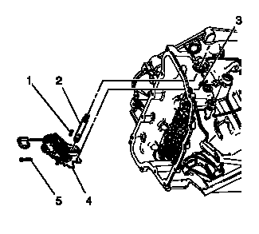
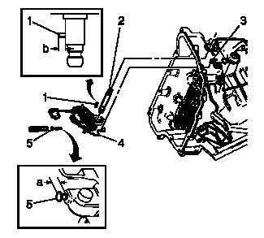

带换档轴位置开关的手动换档止动杆总成的更换
专用工具
DT-41229
手动换档轴销安装工具
当地同等工具：
专用工具
拆卸程序
1.
控制阀体»拆下–
控制阀体的更换

2.
使用撬杆和钳子,拆下手动换档轴止动杆轮毂销（1）。
3.
使用斜嘴钳或同等工具拆下并报废手动换档轴销（5）。
4.
手动换档轴（2）»拆下
5.
将执行器杆（3）从止动杆总成上断开。不要将执行器杆从变速器壳体上拆下。
注意:
切勿将驻车执行器杆端推出壳体内的油道机械加工面以外。如果将驻车棘爪执行器总成推离变速器过远，就会使执行器杆从驻车棘爪上脱离，从而出现无驻车档的情况。需要拆解变速器总成以将执行器杆重新安装至驻车棘爪。
6.
手动换档轴止动杆（带换档位置开关）总成（4）»拆下
安装程序

1.
将执行器杆（3）连接至止动杆总成。
2.
手动换档轴止动杆（带换档位置开关）总成（4）»安装
3.
手动换档轴（2）»安装
4.
安装手动换档轴止动杆轮毂销（1）至高度为
7.9毫米（0.38英寸）
（b）。
告诫：
用J 41229将手动换档轴销安装至合适的高度，以正确固定手动换档轴。如果销安装过深，则可能导致壳体孔开裂。
5.
使用
DT-41229
销安装工具
安装新的手动换档轴销（5）。使用新的销以确保与壳体接合正确。
6.
检查销的安装高度是否在
7.2 - 8.2毫米（0.28 - 0.32英寸）
（a）之内。
7.
控制阀体»安装–
控制阀体的更换
8.
执行“变速器自适应值读入”程序。
变速器自适应值读入
、
变速器自适应值读入